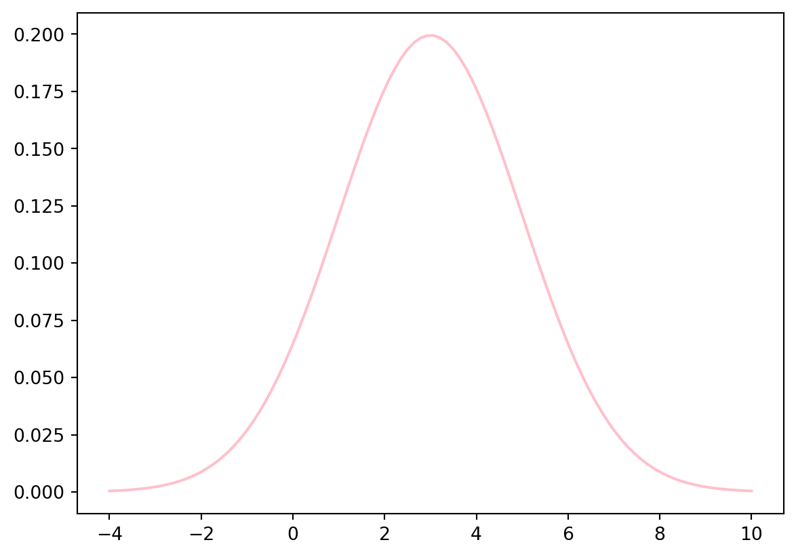

# 정규분포 pdf 값을 계산하는 자신만의
# 파이썬 함수를 정의하고,
# 정규분포 mu = 3, sigma = 2 의 pdf를 그릴 것.
import math
import numpy as np
import matplotlib.pyplot as plt
k = np.linspace(-100000000, 100000000, 100)
def normal_pdf(x, mu, sigma):
part1=(sigma * (math.sqrt(2*math.pi)))**-1
part2=(-(x-mu)**2/(2*sigma**2))
return part1 * part2
y = normal_pdf(k, mu=3, sigma=2)
plt.plot(k, y, color="pink")
plt.show()
plt.clf()
<Figure size 672x480 with 0 Axes>